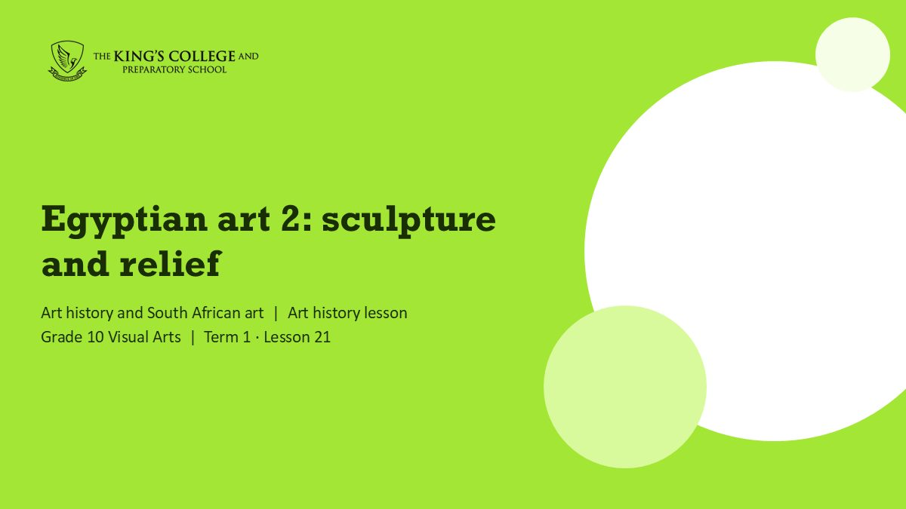

Term 1 · Lesson 21 · Art history lesson
Egyptian art 2: sculpture and relief
Start here
Today I will
- Explain how Egyptian freestanding sculpture shows permanence and stillness
- Tell the difference between sunken and raised relief
- Analyse an Egyptian statue using the FET formula
If you wanted a portrait of yourself to survive for 4 500 years, what material would you choose, and what pose would you stand in?
Words to Know
| Word | Meaning |
|---|---|
| Freestanding sculpture | Sculpture that stands on its own and can, in theory, be walked around and seen from all sides. |
| Relief | Sculpture carved into or out of a flat surface, so the figures stay attached to the background. |
| Sunken relief | Relief in which the outlines of the figures are cut down into the surface. |
| Raised (low) relief | Relief in which the background is cut away so the figures stand slightly forward. |
| Frontality | Designing a figure to be seen mainly from the front, facing straight ahead and symmetrical. |
| Permanence | The quality of lasting a very long time; for Egyptians, lasting for eternity. |
Slides

Videos
Notes
Freestanding sculpture (Khafre, Menkaure and his queen) and sunken and raised relief; permanence and stillness.
Freestanding sculpture: made to last forever
- King Khafre Enthroned (c. 2500 BCE): Khafre sits upright on a throne carved from hard, dark stone. The falcon god Horus spreads his wings behind the king's head as a protector.
- King Menkaure and Queen (c. 2490–2472 BCE): A greywacke pair, about 1.4 m high. Both stand frontally, the king's left foot forward; the queen's arm reaches around his waist.
- Stone left in place: Stone between the arms and body and a back slab behind the figures keep the statue strong. Nothing sticks out to break off.
- Stillness: No twist, no gesture, no emotion. Calm, symmetrical figures suggest order and a life that does not change.
- Idealised rulers: Kings are shown young, fit and calm, never old or tired. The statue shows the office of pharaoh, not a moment in his life.
Two kinds of relief
| Sunken relief | Raised (low) relief |
|---|---|
| The outline of the figure is cut into the surface; the background stays at the original level. | The background is cut away, so the figure stands slightly above it. |
| Strong sunlight throws a sharp shadow inside the cut line, so it reads well on outside walls. | Often used on inner walls and in tombs, where softer light falls across the surface. |
| Quicker, because less stone is removed. | Slower, because the whole background must be lowered. |
| Both use the composite view, registers and hierarchical scale, and both were usually painted. | Both use the composite view, registers and hierarchical scale, and both were usually painted. |
Egyptian sculptors carved for eternity: hard stone, a frontal pose and nothing that could break.
Practical
You need: History booklet, visual journal
Freestanding statue versus relief carving
- Look at King Menkaure and Queen and at the projected temple relief.
- In pairs, draw a two-column table in your VJ: freestanding statue and relief.
- Compare the two under four headings: material, viewpoint, pose and how they show permanence.
- On your own, use the FET formula on Menkaure and Queen: identify form, describe how it is used and explain its effect.
- Do the same for one more element of your choice, such as line or texture.
- Add a small labelled sketch of the pose: front foot, arms, back slab.
Test yourself
- Explain the difference between sunken relief and raised relief.
- Name two features of King Menkaure and Queen that give a sense of permanence.
- Why are Egyptian statues frontal and still rather than shown in movement?
Show answers
1. In sunken relief the figure is cut into the surface; in raised relief the background is cut away so the figure stands forward. 2. Any two: hard greywacke stone; back slab; stone left between arms and body; frontal, symmetrical pose; calm, idealised faces. 3. The statue had to last for eternity as a home for the ka and show the unchanging order of the pharaoh's rule, so calm stillness was more important than a natural moment.
Finished early?
Show the difference between the two kinds of relief with a quick drawing.
- Draw a cross-section of sunken relief (a groove cut in) and raised relief (a step standing forward).
- Draw the first letter of your name twice: once as sunken relief and once as raised relief.
- Add an arrow for the sun and shade where the shadows would fall on each.
- Write one sentence on which kind would read better on an outside wall, and why.